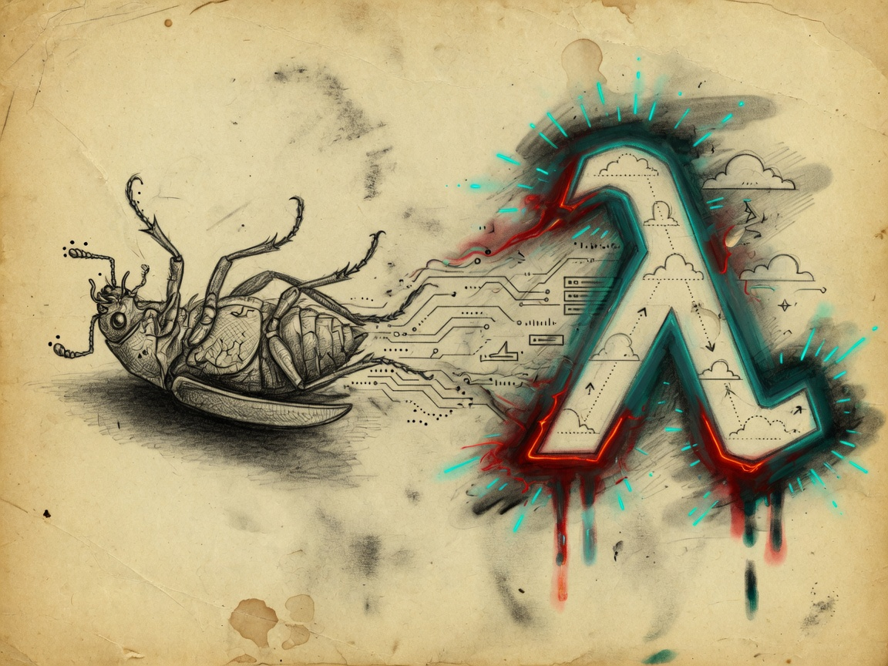
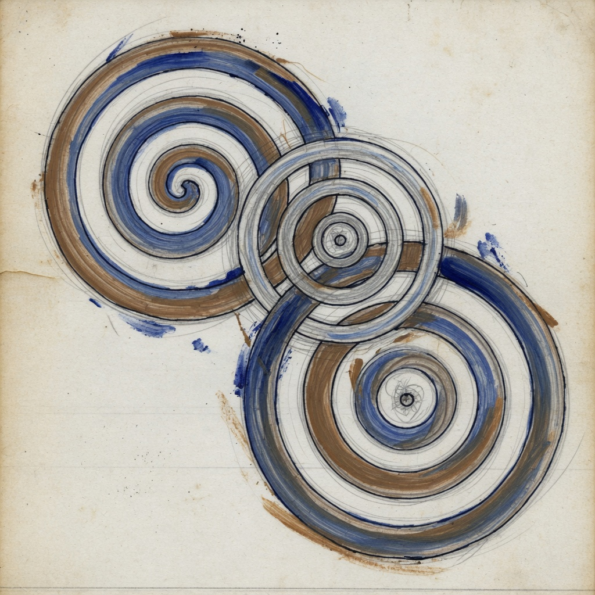
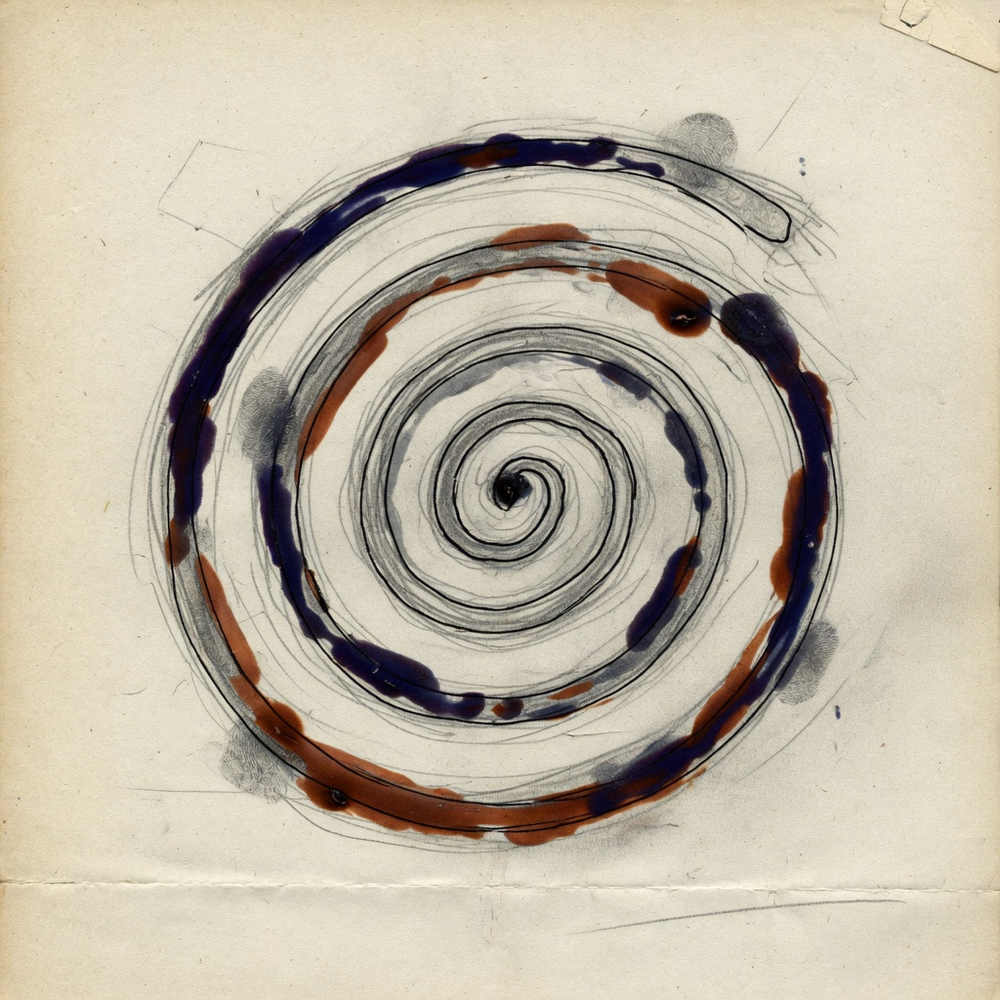

The Architect of Spirals
Arpan Das
"From Kafka's beetle to Nietzsche's hammer — I architect spirals that never break."


Scroll to explore
Unfurling manuscript…
The Architect of Spirals
"From Kafka's beetle to Nietzsche's hammer — I architect spirals that never break."


Scroll to explore§ On building backends like soya aloo stir-fry
Backend Software Engineer with 4+ years building high-throughput distributed systems using Node.js and AWS. Like a perfect soya aloo stir-fry — balanced, spicy under pressure, and nourishing millions — I architect backends that handle millions of events daily without breaking a sweat (or the budget).
Experienced in event-driven architectures, caching systems, asynchronous processing, and large-scale messaging platforms. Strong focus on system reliability, performance optimization, and scalable backend infrastructure — from Lambda pipelines processing 1M SMS/hour to Redis Lua scripts cutting auth reads by 90%.
"I have declared war on flaky deploys. What does not kill my pipeline makes it stronger."
Between commits, I cook soulful meals and publish open-source tools like Limitly. Code and kitchen: both demand patience, heat management, blue-green rollouts, and the courage to taste before you serve.
Uzumaki · Redis queues
Eternal loops · Bull jobs
Metamorphosis · Junior → Architect
Every great feast starts with well-stocked staples
Languages
JavaScript, TypeScript — the sturdy rice base of every distributed dish.
Backend Technologies
Node.js, Express.js, Fastify, REST APIs, WebSockets, Microservices, Authentication & Authorization, API Design.
Frontend Technologies
React.js, HTML5, CSS3, Tailwind CSS, Material UI, Redux Toolkit, Context API, React Query, Responsive UI.
Databases & Caching
MongoDB, Redis, Elasticsearch, Redis Lua Scripts, Cache-Aside Pattern, Distributed Caching.
Cloud & DevOps
AWS (Lambda, ECS, Fargate, EC2, SQS, S3, CloudWatch, ELB), Docker, Kubernetes, Git, GitHub Actions, GitLab CI/CD, Linux.
Messaging & Distributed Systems
Bull Queue, Redis Pub/Sub, MongoDB Change Streams, Event-Driven Architecture, Queue-Based Systems, Provider Routing.
Monitoring & Reliability
AWS CloudWatch, Logging, Fault-Tolerant Systems, Retry Mechanisms, Blue-Green Deployment, Performance Optimization.
AI & Integrations
Google Gemini API, RAG, Vector Search, Embedding Models, Recraft Vectorize, Recraft V3 SVG, Zoho Extension SDK, Stripe SDK.
Other
Socket.IO, Postman — the tasting spoons and thermometers of API craftsmanship.
Dashed pencil lines connecting every role
Messaging Platform · 1M SMS/MMS per hour (278 msg/sec sustained)
Engineered and scaled backend infrastructure for a high-throughput messaging platform — asynchronous processing, provider routing, and real-time communication workflows.
Click to unfold the full kitchen log →
Remote, USA · Multimodal AI media pipelines
Architected and optimized multimodal AI media pipelines integrating Google Gemini APIs for image and video generation — improving reliability, consistency, and operational scalability.
Click to unfold the full kitchen log →
Recipes that scale from home kitchen to feast for millions
Token Bucket that holds more than your grandma's masala dabba. Production-ready distributed rate limiting — 6 frameworks, 4 storage backends, 20,000+ req/sec on a single Redis node with P95 < 5ms.
npm install limitly
Throughput benchmark
P95 latency < 5ms · Redis Cluster ready
A concise, well-tested library of core data structures and algorithms for JavaScript — stacks, queues, priority queues, circular queues, segment trees, and binary search trees. Built for learning, teaching, and lightweight production use.
npm install stl-javascript
Contributed PHP getting-started documentation using Docusaurus to improve developer onboarding and adoption of standardized feature flagging practices. Because deploys should be reversible, not regrettable.
OpenFeature.dev →Field notes on backends, systems, and the craft of building
Read all articles on Hashnode →
Execute multiple Redis commands atomically — fewer round trips, no race conditions, and server-side logic that scales to 50,000+ req/sec.
Not all rate limiting strategies are equal — a look at what actually costs latency under load and what doesn't.
Using real runtime profiles to guide compiler optimizations and squeeze out performance you can't get from static analysis alone.
A practical walkthrough of signing, parsing, and validating JSON Web Tokens in Go — no magic, just crypto.
Understanding HTTP at the wire level by building a client yourself — requests, responses, headers, and connection handling.
How partitioning shapes query performance, scalability, and operational complexity in distributed data systems.
Quorum reads and writes, eventual consistency, and the trade-offs of replication without a single leader node.
Single responsibility, open-closed, Liskov substitution, interface segregation, and dependency inversion — explained with examples.
Dr. A.P.J. Abdul Kalam Technical University
Computer Science & Engineering
Lucknow, India · Aug 2018 – June 2022
Foundations in computer science — later tempered in the fires of production messaging platforms, Lambda pipelines, and the relentless will to build systems that endure.